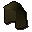

Leather cowl

| Config name | leather_cowl |
| Item id | 1167 |
| Value | 24 gp |
| Weight | 2lb |
| Members | No |
| Tradeable | Yes |
| Stackable | No |
| Equip slot | hat |
| Options | Wear |
| Category | armour_helmet |
| Defined in | scripts/skill_crafting/configs/leather/leather_gear.obj |
| Equipment stats | Range att 1, Stab def 2, Slash def 3, Crush def 4, Magic def 2, Range def 3 |
Leather cowl
Better than no armour!
How to make
| Skill | Level | XP | Ingredients | Tool | How | Where | Makes |
|---|---|---|---|---|---|---|---|
| Crafting | 9 | 18.5 | interface | 1 |
Sold at
| Shop | Shopkeeper | Stock |
|---|---|---|
| Aaron's Archery Appendages. | Armour salesman | 10 |
Referenced in scripts
scripts/levelrequire/scripts/tier1.rs2scripts/levelup/scripts/levelup_unlocks_crafting.rs2scripts/skill_crafting/scripts/leather/leather.rs2